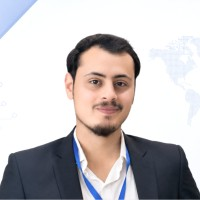

People before programme
Make first-timers feel welcome and leave room for real conversation.

ATIFCOMMUNITY BUILDERGitHub ↗PESHAWAR, PAKISTAN / SUPABASE COMMUNITY
I’m Muhammad Atif — known as Atif — a community and event organizer bringing Peshawar’s students, developers, and curious minds together to learn, build, and grow.
Network Infrastructure & Security Engineer · Computer Science graduate · Community organizer
A great community event is more than a stage and a schedule. It’s the moment a student finds a mentor, a developer ships an idea, or someone realizes they have a place in tech.
I help bring those moments to life in Peshawar. From campus coordination and volunteer support to the details that make a room feel welcoming, I work alongside the community to turn good intentions into thoughtful experiences.
Find me on GitHub ↗Make first-timers feel welcome and leave room for real conversation.
Bring practical demos, shared experiments, and useful takeaways into the room.
Connect campus communities with a wider world of tools, people, and ideas.
COMMUNITY BUILDER WITH A HANDS-ON TECHNICAL BACKGROUND
My event work grows from years around networks, infrastructure, and practical engineering—so I can connect community conversations with the systems people build and depend on.
Led fiber installation teams, troubleshot GPON access networks, and used OTDR testing to locate faults in aerial and underground cable.
Worked on Huawei and PTCL modules, MSAG troubleshooting, fiber splicing, and power systems for station equipment.
Supported electrical installation and maintenance, including traffic-light systems and site fault resolution.
A LOCAL COMMUNITY, A GLOBAL TOOLKIT
I work with community leaders, student societies, and campus partners to create welcoming spaces for practical learning and connection.
 COMMUNITY SPOTLIGHT↗
COMMUNITY SPOTLIGHT↗A campus gathering for panel conversations, practical sessions, live demos, and meeting fellow builders. Organized by Supabase Peshawar with TechKhwa and the Computing Students Society.
Guest experience, campus coordination, volunteer support, event flow, and the details that help a community gathering feel effortless.
Plan something together ↗Every campus has its own spark. I’m proud to support student-focused technology events across Peshawar’s university community.
✳ Stronger communities happen when campuses share what they know.
I’m grateful to work alongside Saqib Ullah Khalil, who leads the community effort, and the volunteers and campus partners who make each gathering possible.
Meet Supabase Peshawar ↗LOCAL ROOTS ✳ OPEN SOURCE SPIRITTHE KIND OF WORK I LOVE
GOT A ROOM, A TOPIC, OR AN IDEA?
If you’re building something for Peshawar’s student and developer community, I’d love to hear about it.
Connect on GitHub ↗